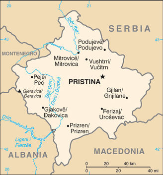
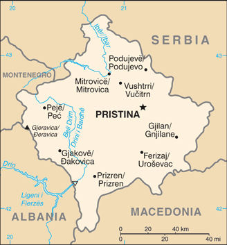

-
Introduction :: Kosovo
-
Background:
The central Balkans were part of the Roman and Byzantine Empires before ethnic Serbs migrated to the territories of modern Kosovo in the 7th century. During the medieval period, Kosovo became the center of a Serbian Empire and saw the construction of many important Serb religious sites, including many architecturally significant Serbian Orthodox monasteries. The defeat of Serbian forces at the Battle of Kosovo in 1389 led to five centuries of Ottoman rule during which large numbers of Turks and Albanians moved to Kosovo. By the end of the 19th century, Albanians replaced Serbs as the dominant ethnic group in Kosovo. Serbia reacquired control over the region from the Ottoman Empire during the First Balkan War of 1912. After World War II, Kosovo's present-day boundaries were established when Kosovo became an autonomous province of Serbia in the Socialist Federal Republic of Yugoslavia (S.F.R.Y.). Despite legislative concessions, Albanian nationalism increased in the 1980s, which led to riots and calls for Kosovo's independence. The Serbs - many of whom viewed Kosovo as their cultural heartland - instituted a new constitution in 1989 revoking Kosovo's autonomous status. Kosovo's Albanian leaders responded in 1991 by organizing a referendum declaring Kosovo independent. Serbia undertook repressive measures against the Kosovar Albanians in the 1990s, provoking a Kosovar Albanian insurgency.
Beginning in 1998, Serbia conducted a brutal counterinsurgency campaign that resulted in massacres and massive expulsions of ethnic Albanians (some 800,000 ethnic Albanians were forced from their homes in Kosovo). After international attempts to mediate the conflict failed, a three-month NATO military operation against Serbia beginning in March 1999 forced the Serbs to agree to withdraw their military and police forces from Kosovo. UN Security Council Resolution 1244 (1999) placed Kosovo under a transitional administration, the UN Interim Administration Mission in Kosovo (UNMIK), pending a determination of Kosovo's future status. A UN-led process began in late 2005 to determine Kosovo's final status. The 2006-07 negotiations ended without agreement between Belgrade and Pristina, though the UN issued a comprehensive report on Kosovo's final status that endorsed independence. On 17 February 2008, the Kosovo Assembly declared Kosovo independent. Since then, over 110 countries have recognized Kosovo, and it has joined numerous international organizations. In October 2008, Serbia sought an advisory opinion from the International Court of Justice (ICJ) on the legality under international law of Kosovo's declaration of independence. The ICJ released the advisory opinion in July 2010 affirming that Kosovo's declaration of independence did not violate general principles of international law, UN Security Council Resolution 1244, or the Constitutive Framework. The opinion was closely tailored to Kosovo's unique history and circumstances.
Demonstrating Kosovo’s development into a sovereign, multi-ethnic, democratic country the international community ended the period of Supervised Independence in 2012. Kosovo held its most recent national and municipal elections in 2017. Serbia continues to reject Kosovo's independence, but the two countries agreed in April 2013 to normalize their relations through EU-facilitated talks, which produced several subsequent agreements the parties are engaged in implementing, though they have not yet reached a final settlement. Kosovo seeks full integration into the international community, and has pursued bilateral recognitions and memberships in international organizations. Kosovo signed a Stabilization and Association Agreement with the EU in 2015, and was named by a 2018 EU report as one of six Western Balkan countries that will be able to join the organization once it meets the criteria to accede. Kosovo also seeks memberships in the UN and in NATO.
-
Geography :: Kosovo
-
Location:Southeast Europe, between Serbia and MacedoniaGeographic coordinates:42 35 N, 21 00 EMap references:EuropeArea:total: 10,887 sq kmland: 10,887 sq kmwater: 0 sq kmcountry comparison to the world: 168Area - comparative:slightly larger than DelawareLand boundaries:total: 714 kmborder countries (4): Albania 112 km, Macedonia 160 km, Montenegro 76 km, Serbia 366 kmCoastline:0 km (landlocked)Maritime claims:none (landlocked)Climate:influenced by continental air masses resulting in relatively cold winters with heavy snowfall and hot, dry summers and autumns; Mediterranean and alpine influences create regional variation; maximum rainfall between October and DecemberTerrain:flat fluvial basin at an elevation of 400-700 m above sea level surrounded by several high mountain ranges with elevations of 2,000 to 2,500 mElevation:mean elevation: 450 melevation extremes: 297 m lowest point: Drini i Bardhe/Beli Drim (located on the border with Albania)2656 highest point: Gjeravica/DeravicaNatural resources:nickel, lead, zinc, magnesium, lignite, kaolin, chrome, bauxiteLand use:agricultural land: 52.8% (2001 est.)arable land: 27.4% (2001 est.) / permanent crops: 1.9% (2001 est.) / permanent pasture: 23.5% (2001 est.)forest: 41.7% (2001 est.)other: 5.5% (2001 est.)Irrigated land:NAPopulation distribution:population clusters exist throughout the country, the largest being in the east in and around the capital of PristinaEnvironment - current issues:air pollution (pollution from power plants and nearby lignite mines take a toll on people's health); water scarcity and pollution; land degradationGeography - note:the 41-km long Nerodimka River divides into two branches each of which flows into a different sea: the northern branch flows into the Sitnica River, which via the Ibar, Morava, and Danube Rivers ultimately flows into the Black Sea; the southern branch flows via the Lepenac and Vardar Rivers into the Aegean Sea
-
People and Society :: Kosovo
-
Population:1,907,592 (July 2018 est.)country comparison to the world: 151Nationality:noun: Kosovar (Albanian), Kosovac (Serbian)adjective: Kosovar (Albanian), Kosovski (Serbian)
note: Kosovan, a neutral term, is sometimes also used as a noun or adjective
Ethnic groups:Albanians 92.9%, Bosniaks 1.6%, Serbs 1.5%, Turk 1.1%, Ashkali 0.9%, Egyptian 0.7%, Gorani 0.6%, Romani 0.5%, other/unspecified 0.2% (2011 est.)note: these estimates may under-represent Serb, Romani, and some other ethnic minorities because they are based on the 2011 Kosovo national census, which excluded northern Kosovo (a largely Serb-inhabited region) and was partially boycotted by Serb and Romani communities in southern Kosovo
Languages:Albanian (official) 94.5%, Bosnian 1.7%, Serbian (official) 1.6%, Turkish 1.1%, other 0.9% (includes Romani), unspecified 0.1% (2011 est.)note: in municipalities where a community's mother tongue is not one of Kosovo's official languages, the language of that community may be given official status according to the 2006 Law on the Use of Languages
Religions:Muslim 95.6%, Roman Catholic 2.2%, Orthodox 1.5%, other 0.07%, none 0.07%, unspecified 0.6% (2011 est.)Age structure:0-14 years: 24.74% (male 245,188 /female 226,766)15-24 years: 17.12% (male 170,448 /female 156,199)25-54 years: 42.52% (male 428,030 /female 383,045)55-64 years: 8.19% (male 79,415 /female 76,743)65 years and over: 7.43% (male 59,830 /female 81,928) (2018 est.)population pyramid: The World Factbook Field Image ModalEurope :: Kosovo Print
The World Factbook Field Image ModalEurope :: Kosovo Print Image DescriptionThis is the population pyramid for Kosovo. A population pyramid illustrates the age and sex structure of a country's population and may provide insights about political and social stability, as well as economic development. The population is distributed along the horizontal axis, with males shown on the left and females on the right. The male and female populations are broken down into 5-year age groups represented as horizontal bars along the vertical axis, with the youngest age groups at the bottom and the oldest at the top. The shape of the population pyramid gradually evolves over time based on fertility, mortality, and international migration trends.
Image DescriptionThis is the population pyramid for Kosovo. A population pyramid illustrates the age and sex structure of a country's population and may provide insights about political and social stability, as well as economic development. The population is distributed along the horizontal axis, with males shown on the left and females on the right. The male and female populations are broken down into 5-year age groups represented as horizontal bars along the vertical axis, with the youngest age groups at the bottom and the oldest at the top. The shape of the population pyramid gradually evolves over time based on fertility, mortality, and international migration trends.
For additional information, please see the entry for Population pyramid on the Definitions and Notes page under the References tab.Median age:total: 29.6 yearsmale: 29.3 yearsfemale: 29.9 years (2018 est.)country comparison to the world: 122Population distribution:population clusters exist throughout the country, the largest being in the east in and around the capital of PristinaMajor urban areas - population:207,062 PRISTINA (capital) (2014)Sex ratio:at birth: 1.08 male(s)/female (2017 est.)0-14 years: 1.08 male(s)/female (2017 est.)15-24 years: 1.1 male(s)/female (2017 est.)25-54 years: 1.12 male(s)/female (2017 est.)55-64 years: 1.01 male(s)/female (2017 est.)65 years and over: 0.72 male(s)/female (2017 est.)total population: 1.06 male(s)/female (2017 est.)HIV/AIDS - adult prevalence rate:NAUnemployment, youth ages 15-24:total: 52.4% (2016 est.)male: 47.3% (2016 est.)female: 65.4% (2016 est.)country comparison to the world: 5 -
Government :: Kosovo
-
Country name:conventional long form: Republic of Kosovoconventional short form: Kosovolocal long form: Republika e Kosoves (Republika Kosovo)local short form: Kosova (Kosovo)etymology: name derives from the Serbian "kos" meaning "blackbird," an ellipsis (linguistic omission) for "kosove polje" or "field of the blackbirds"Government type:parliamentary republicCapital:name: Pristina (Prishtine, Prishtina)geographic coordinates: 42 40 N, 21 10 Etime difference: UTC+1 (6 hours ahead of Washington, DC, during Standard Time)daylight saving time: +1hr, begins last Sunday in March; ends last Sunday in OctoberAdministrative divisions:38 municipalities (komunat, singular - komuna (Albanian); opstine, singular - opstina (Serbian)); Decan (Decani), Dragash (Dragas), Ferizaj (Urosevac), Fushe Kosove (Kosovo Polje), Gjakove (Dakovica), Gjilan (Gnjilane), Gllogovc (Glogovac), Gracanice (Gracanica), Hani i Elezit (Deneral Jankovic), Istog (Istok), Junik, Kacanik, Kamenice (Kamenica), Kline (Klina), Kllokot (Klokot), Leposaviq (Leposavic), Lipjan (Lipljan), Malisheve (Malisevo), Mamushe (Mamusa), Mitrovice e Jug (Juzna Mitrovica) [South Mitrovica], Mitrovice e Veriut (Severna Mitrovica) [North Mitrovica], Novoberde (Novo Brdo), Obiliq (Obilic), Partesh (Partes), Peje (Pec), Podujeve (Podujevo), Prishtine (Pristina), Prizren, Rahovec (Orahovac), Ranillug (Ranilug), Shterpce (Strpce), Shtime (Stimlje), Skenderaj (Srbica), Suhareke (Suva Reka), Viti (Vitina), Vushtrri (Vucitrn), Zubin Potok, ZvecanIndependence:17 February 2008 (from Serbia)National holiday:Independence Day, 17 February (2008)Constitution:history: previous 1974, 1990; latest (postindependence) draft finalized 2 April 2008, signed 7 April 2008, ratified 9 April 2008, entered into force 15 June 2008; note - amendment 24, passed by the Assembly in August 2015, established the Kosovo Relocated Specialist Institution, referred to as the Kosovo Specialist Chamber or "Specialist Court," was established to try war crimes allegedly committed by the Kosovo Liberation Army in the late 1990s (2016)amendments: proposed by the government, by the president of the republic, or by one-fourth of Assembly deputies; passage requires two-thirds majority vote of the Assembly, including two-thirds majority vote of deputies representing non-majority communities, followed by a favorable Constitutional Court assessment; amended several times, last in 2016 (2016)Legal system:civil law system; note - the European Union Rule of Law Mission (EULEX) retained limited executive powers within the Kosovo judiciary for complex cases from 2008 to 2018International law organization participation:has not submitted an ICJ jurisdiction declaration; non-party state to the ICCtCitizenship:citizenship by birth: nocitizenship by descent only: at least one parent must be a citizen of Kosovodual citizenship recognized: yesresidency requirement for naturalization: 5 yearsSuffrage:18 years of age; universalJudicial branch:highest courts: Supreme Court (consists of the court president and 18 judges and organized into Appeals Panel of the Kosovo Property Agency and Special Chamber); Constitutional Court (consists of the court president, vice president, and 7 judges)judge selection and term of office: Supreme Court judges nominated by the Kosovo Judicial Council, a 13-member independent body staffed by judges and lay members, and also responsible for overall administration of Kosovo's judicial system; judges appointed by the president of the Republic of Kosovo; judges appointed until mandatory retirement age; Constitutional Court judges nominated by the Kosovo Assembly and appointed by the president of the republic to serve single, 9-year termssubordinate courts: subordinate courts: Court of Appeals (organized into 4 departments: General, Serious Crime, Commercial Matters, and Administrative Matters; Basic Court (located in 7 municipalities, each with several branches)
note: in August 2015, the Kosovo Assembly approved a constitutional amendment that establishes the Kosovo Relocated Specialist Judicial Institution, also referred to as the Kosovo Specialist Chambers or "Special Court"; the court, located at the Hague in the Netherlands, began operating in late 2016 and has jurisdiction to try crimes against humanity, war crimes, and other crimes under Kosovan law that occurred in the 1998-2000 period
Executive branch:chief of state: President Hashim THACI (since 7 April 2016)head of government: Prime Minister Ramush HARADINAJ (since 9 September 2017); note - Prime Minister Isa MUSTAFA lost no-confidence vote on 10 May 2017, and his government was dismissedcabinet: Cabinet elected by the Assemblyelections/appointments: president indirectly elected by at least two-thirds majority vote of the Assembly for a 5-year term; if a candidate does not attain a two-thirds threshold in the first two ballots, the candidate winning a simple majority vote in the third ballot is elected (eligible for a second term); election last held on 26 February 2016 (next to be held in 2021); prime minister indirectly elected by the Assemblyelection results: Hashim THACI elected president in the third ballot; Assembly vote - Hashim THACI (PDK) 71, Rafet RAMA (PDK) 0, invalid 10; Ramush HARADINAJ nominated prime minister by the president and elected by the Assembly, receiving 61 votes out of 62 (1 abstention)Legislative branch:description: unicameral Assembly or Kuvendi i Kosoves/Skupstina Kosova (120 seats; 100 members directly elected by proportional representation vote with 20 seats reserved for ethnic minorities - 10 for Serbs and 10 for other ethnic minorities; members serve 4-year terms)elections: last held on 11 June 2017 (next to be held in 2021); note - early elections were held after a no-confidence vote on 10 May 2017 led to the dismissal of Prime Minister Isa MUSTAFAelection results: percent of vote by party/coalition - PAN Coalition 33.7%, VV 27.5%, LAA Coalition 25.5%, Serb List 6.1%, KDTP 1.1%, VAKAT 1.1%, other 5%; seats by party/coalition - PAN Coalition 39, VV 32, LAA Coalition 29, Serb List 9, KDTP 2, VAKAT 2, other 7; composition - men 81, women 39, percent of women 32.5%Political parties and leaders:Albanian Christian Democratic Party of Kosovo or PSHDK [Uke BERISHA]
Alliance for the Future of Kosovo or AAK [Ramush HARADINAJ]
Alternativa [Mimoza KUSARI-LILA]
Conservative Party of Kosovo or PK [Munir BASHA]
Democratic League of Kosovo or LDK [Isa MUSTAFA]
Democratic Party of Kosovo or PDK [Kadri VESELI]
Independent Liberal Party or SLS [Slobodan PETROVIC]
Initiative for Kosovo or NISMA [Fatmir LIMAJ]
Justice Party of Kosovo or PD [Ferid AGANI]
LAA Coalition [Isa MUSTAFA] (electoral coalition including LDK, AKR, Alternativa; after the election, AKR joined PAN)
Movement for Self-Determination (Vetevendosje) or VV [Albin KURTI]
Movement for Unification or LB [Valon MURATI]
New Kosovo Alliance or AKR [Behgjet PACOLLI]
PAN Coalition [Kadri VESELI] (electoral coalition includes PDK, AAK, NISMA; after the election, AKR joined and was renamed PANA)
Serb List [Goran RAKIC]
Social Democratic Party of Kosovo or PSD [Shpend AHMETI]
Turkish Democratic Party of Kosovo or KDTP [Mahir YAGCILAR]
Vakat Coalition or VAKAT [Rasim DEMIRI]International organization participation:IBRD, IDA, IFC, IMF, ITUC (NGOs), MIGA, OIF (observer)Diplomatic representation in the US:chief of mission: Ambassador Vlora CITAKU (since 17 September 2015)chancery: 2175 K Street, NW, Suite 300, Washington, DC 20037telephone: 202-450-2130FAX: 202-735-0609consulate(s) general: New Yorkconsulate(s): Des Moines (IA)Diplomatic representation from the US:chief of mission: Ambassador Philip KOSNETT (since 3 December 2018)embassy: Arberia/Dragodan, Nazim Hikmet 30, Pristina, Kosovomailing address: use embassy street addresstelephone: [383] 38 59 59 3000FAX: [383] 38 549 890Flag description:centered on a dark blue field is a gold-colored silhouette of Kosovo surmounted by six white, five-pointed stars arrayed in a slight arc; each star represents one of the major ethnic groups of Kosovo: Albanians, Serbs, Turks, Gorani, Roma, and Bosniaksnote: one of only two national flags that uses a map as a design element; the flag of Cyprus is the other
National symbol(s):six, five-pointed, white stars; national colors: blue, gold, whiteNational anthem:name: Europelyrics/music: no lyrics/Mendi MENGJIQInote: adopted 2008; Kosovo chose to exclude lyrics in its anthem so as not to offend the country's minority ethnic groups
-
Economy :: Kosovo
-
Economy - overview:
Kosovo's economy has shown progress in transitioning to a market-based system and maintaining macroeconomic stability, but it is still highly dependent on the international community and the diaspora for financial and technical assistance. Remittances from the diaspora - located mainly in Germany, Switzerland, and the Nordic countries - are estimated to account for about 17% of GDP and international donor assistance accounts for approximately 10% of GDP. With international assistance, Kosovo has been able to privatize a majority of its state-owned enterprises.
Kosovo's citizens are the second poorest in Europe, after Moldova, with a per capita GDP (PPP) of $10,400 in 2017. An unemployment rate of 33%, and a youth unemployment rate near 60%, in a country where the average age is 26, encourages emigration and fuels a significant informal, unreported economy. Most of Kosovo's population lives in rural towns outside of the capital, Pristina. Inefficient, near-subsistence farming is common - the result of small plots, limited mechanization, and a lack of technical expertise. Kosovo enjoys lower labor costs than the rest of the region. However, high levels of corruption, little contract enforcement, and unreliable electricity supply have discouraged potential investors. The official currency of Kosovo is the euro, but the Serbian dinar is also used illegally in Serb majority communities. Kosovo's tie to the euro has helped keep core inflation low.
Minerals and metals production - including lignite, lead, zinc, nickel, chrome, aluminum, magnesium, and a wide variety of construction materials - once the backbone of industry, has declined because of aging equipment and insufficient investment, problems exacerbated by competing and unresolved ownership claims of Kosovo’s largest mines. A limited and unreliable electricity supply is a major impediment to economic development. The US Government is cooperating with the Ministry of Economic Development (MED) and the World Bank to conclude a commercial tender for the construction of Kosovo C, a new lignite-fired power plant that would leverage Kosovo’s large lignite reserves. MED also has plans for the rehabilitation of an older bituminous-fired power plant, Kosovo B, and the development of a coal mine that could supply both plants.
In June 2009, Kosovo joined the World Bank and International Monetary Fund, the Central Europe Free Trade Area (CEFTA) in 2006, the European Bank for Reconstruction and Development in 2012, and the Council of Europe Development Bank in 2013. In 2016, Kosovo implemented the Stabilization and Association Agreement (SAA) negotiations with the EU, focused on trade liberalization. In 2014, nearly 60% of customs duty-eligible imports into Kosovo were EU goods. In August 2015, as part of its EU-facilitated normalization process with Serbia, Kosovo signed agreements on telecommunications and energy distribution, but disagreements over who owns economic assets, such as the Trepca mining conglomerate, within Kosovo continue.
Kosovo experienced its first federal budget deficit in 2012, when government expenditures climbed sharply. In May 2014, the government introduced a 25% salary increase for public sector employees and an equal increase in certain social benefits. Central revenues could not sustain these increases, and the government was forced to reduce its planned capital investments. The government, led by Prime Minister MUSTAFA - a trained economist - recently made several changes to its fiscal policy, expanding the list of duty-free imports, decreasing the Value Added Tax (VAT) for basic food items and public utilities, and increasing the VAT for all other goods.
While Kosovo’s economy continued to make progress, unemployment has not been reduced, nor living standards raised, due to lack of economic reforms and investment.
GDP (purchasing power parity):$19.6 billion (2017 est.)$18.89 billion (2016 est.)$18.16 billion (2015 est.)note: data are in 2017 dollars
country comparison to the world: 151GDP (official exchange rate):$7.094 billion (2017 est.) (2017 est.)GDP - real growth rate:3.7% (2017 est.)4.1% (2016 est.)4.1% (2015 est.)country comparison to the world: 90GDP - per capita (PPP):$10,900 (2017 est.)$10,600 (2016 est.)$10,200 (2015 est.)note: data are in 2016 US dollars
country comparison to the world: 137Gross national saving:17.3% of GDP (2017 est.)13.2% of GDP (2016 est.)15.1% of GDP (2015 est.)country comparison to the world: 118GDP - composition, by end use:household consumption: 84.3% (2017 est.)government consumption: 13.6% (2017 est.)investment in fixed capital: 29% (2017 est.)investment in inventories: 0% (2016 est.)exports of goods and services: 27% (2017 est.)imports of goods and services: -53.8% (2017 est.)GDP - composition, by sector of origin:agriculture: 11.9% (2017 est.)industry: 17.7% (2017 est.)services: 70.4% (2017 est.)Agriculture - products:wheat, corn, berries, potatoes, peppers, fruit; dairy, livestock; fishIndustries:mineral mining, construction materials, base metals, leather, machinery, appliances, foodstuffs and beverages, textilesIndustrial production growth rate:1.2% (2016 est.)country comparison to the world: 149Labor force:500,300 (2017 est.)note: includes those estimated to be employed in the gray economy
country comparison to the world: 156Labor force - by occupation:agriculture: 4.4%industry: 17.4%services: 78.2% (2017 est.)Unemployment rate:30.5% (2017 est.)27.5% (2016 est.)note: Kosovo has a large informal sector that may not be reflected in these data
country comparison to the world: 208Population below poverty line:17.6% (2015 est.)Distribution of family income - Gini index:23.2 (2015 est.)24.1 (2014 est.)country comparison to the world: 156Budget:revenues: 2.054 billion (2017 est.)expenditures: 2.203 billion (2017 est.)Taxes and other revenues:29% (of GDP) (2017 est.)country comparison to the world: 87Budget surplus (+) or deficit (-):-2.1% (of GDP) (2017 est.)country comparison to the world: 108Public debt:21.2% of GDP (2017 est.)19.4% of GDP (2016 est.)country comparison to the world: 186Inflation rate (consumer prices):1.5% (2017 est.)0.3% (2016 est.)country comparison to the world: 82Commercial bank prime lending rate:6.83% (31 December 2017 est.)7.47% (31 December 2016 est.)country comparison to the world: 122Stock of broad money:$3.11 billion (2016 est.)$2.855 billion (2015 est.)country comparison to the world: 126Stock of domestic credit:$2.02 billion (2014 est.)$2.505 billion (2013 est.)country comparison to the world: 150Current account balance:-$467 million (2017 est.)-$533 million (2016 est.)country comparison to the world: 117Exports:$428 million (2017 est.)$340 million (2016 est.)country comparison to the world: 180Exports - partners:Albania 16%, India 14%, Macedonia, The Former Yugo Rep of 12.1%, Serbia 10.6%, Switzerland 5.6%, Germany 5.4% (2017)Exports - commodities:mining and processed metal products, scrap metals, leather products, machinery, appliances, prepared foodstuffs, beverages and tobacco, vegetable products, textiles and apparelImports:$3.223 billion (2017 est.)$2.876 billion (2016 est.)country comparison to the world: 146Imports - commodities:foodstuffs, livestock, wood, petroleum, chemicals, machinery, minerals, textiles, stone, ceramic and glass products, electrical equipmentImports - partners:Germany 12.4%, Serbia 12.3%, Turkey 9.6%, China 9.1%, Italy 6.4%, Macedonia, The Former Yugo Rep of 5.1%, Albania 5%, Greece 4.4% (2017)Reserves of foreign exchange and gold:$683.9 million (31 December 2016 est.)$708.7 million (31 December 2015 est.)country comparison to the world: 142Debt - external:$506 million (31 December 2017 est.)$448 million (31 December 2016 est.)country comparison to the world: 179Stock of direct foreign investment - at home:$3.59 billion (31 December 2017 est.)$39.02 billion (31 December 2016 est.)country comparison to the world: 113Stock of direct foreign investment - abroad:$275 million (31 December 2017 est.)$230 million (31 December 2016 est.)country comparison to the world: 105Exchange rates:euros (EUR) per US dollar -0.885 (2017 est.)0.903 (2016 est.)0.9214 (2015 est.)0.885 (2014 est.)0.7634 (2013 est.) -
Energy :: Kosovo
-
Electricity access:electrification - total population: 100% (2016)Electricity - production:5.638 billion kWh (2016 est.)country comparison to the world: 117Electricity - consumption:3.957 billion kWh (2016 est.)country comparison to the world: 127Electricity - exports:885.7 million kWh (2017 est.)country comparison to the world: 60Electricity - imports:557 million kWh (2016 est.)country comparison to the world: 78Electricity - installed generating capacity:1.573 million kW (2016 est.)country comparison to the world: 121Electricity - from fossil fuels:97% of total installed capacity (2016 est.)country comparison to the world: 35Electricity - from nuclear fuels:0% of total installed capacity (2017 est.)country comparison to the world: 121Electricity - from hydroelectric plants:3% of total installed capacity (2017 est.)country comparison to the world: 135Electricity - from other renewable sources:1% of total installed capacity (2017 est.)country comparison to the world: 156Crude oil - production:0 bbl/day (2017 est.)country comparison to the world: 157Crude oil - exports:0 bbl/day (2015 est.)country comparison to the world: 149Crude oil - imports:0 bbl/day (2015 est.)country comparison to the world: 147Crude oil - proved reserves:0 bbl NA (2017 est.)country comparison to the world: 153Refined petroleum products - production:0 bbl/day (2015 est.)country comparison to the world: 161Refined petroleum products - consumption:14,000 bbl/day (2016 est.)country comparison to the world: 155Refined petroleum products - exports:192 bbl/day (2015 est.)country comparison to the world: 117Refined petroleum products - imports:14,040 bbl/day (2015 est.)country comparison to the world: 139Natural gas - production:0 cu m (2017 est.)country comparison to the world: 153Natural gas - consumption:0 cu m (2017 est.)country comparison to the world: 164Natural gas - exports:0 cu m (2017 est.)country comparison to the world: 132Natural gas - imports:0 cu m (2017 est.)country comparison to the world: 145Natural gas - proved reserves:0 cu m NA (2017 est.)country comparison to the world: 154Carbon dioxide emissions from consumption of energy:10.05 million Mt (2017 est.)country comparison to the world: 106
-
Communications :: Kosovo
-
Telephones - fixed lines:total subscriptions: 831,470 (July 2016 est.)subscriptions per 100 inhabitants: 45 (July 2016 est.)country comparison to the world: 80Telephones - mobile cellular:total subscriptions: 562,000 (July 2016 est.)subscriptions per 100 inhabitants: 31 (July 2016 est.)country comparison to the world: 168Telephone system:general assessment: Kosovo being part of the EU pre-accession process has helped with their progress in the telecom industry, following a regulatory framework, European standards, and a market of new players encourages development in its telecommunications; 2 MNOs dominate the sector; poor telecome infrastructure means low fixed-line penetration (2017)domestic: fixed-line stands at 45 per 100 and mobile-cellular 31 per 100 persons (2017)international: country code - 383Internet country code:.xk
note: assigned as a temporary code under UN Security Council resolution 1244/99
-
Transportation :: Kosovo
-
Civil aircraft registration country code prefix:Z6 (2016)Airports:6 (2013)country comparison to the world: 172Airports - with paved runways:total: 3 (2017)2,438 to 3,047 m: 1 (2017)1,524 to 2,437 m: 1 (2017)under 914 m: 1 (2017)Airports - with unpaved runways:total: 3 (2013)under 914 m: 3 (2013)Heliports:2 (2013)Railways:total: 333 km (2015)standard gauge: 333 km 1.435-m gauge (2015)country comparison to the world: 120Roadways:total: 2,012 km (2015)paved: 1,921 km (includes 78 km of expressways) (2015)unpaved: 91 km (2015)country comparison to the world: 175
-
Military and Security :: Kosovo
-
Military expenditures:0.79% of GDP (2016)0.78% of GDP (2015)0.73% of GDP (2014)0.69% of GDP (2013)0.67% of GDP (2012)country comparison to the world: 131Military branches:Kosovo does not have a military force; the Kosovo Security Force was established in 2009 and maintains a non-military mandate in four core competencies: search-and-rescue, firefighting, demining, and hazardous material response (2018)
-
Transnational Issues :: Kosovo
-
Disputes - international:Serbia with several other states protest the US and other states' recognition of Kosovo's declaration of its status as a sovereign and independent stateethnic Serbian municipalities living in Kosovo along the northern border challenge final status of Kosovo-Serbia boundaryseveral thousand NATO-led Kosovo Force peacekeepers under UN Interim Administration Mission in Kosovo authority continue to keep the peace within Kosovo between the ethnic Albanian majority and the Serb minority in KosovoKosovo and Macedonia completed demarcation of their boundary in September 2008Refugees and internally displaced persons:IDPs: 16,000 (primarily ethnic Serbs displaced during the 1998-1999 war fearing reprisals from the majority ethnic-Albanian population; a smaller number of ethnic Serbs, Roma, Ashkali, and Egyptians fled their homes in 2,004 as a result of violence) (2017)
Europe ::
Kosovo